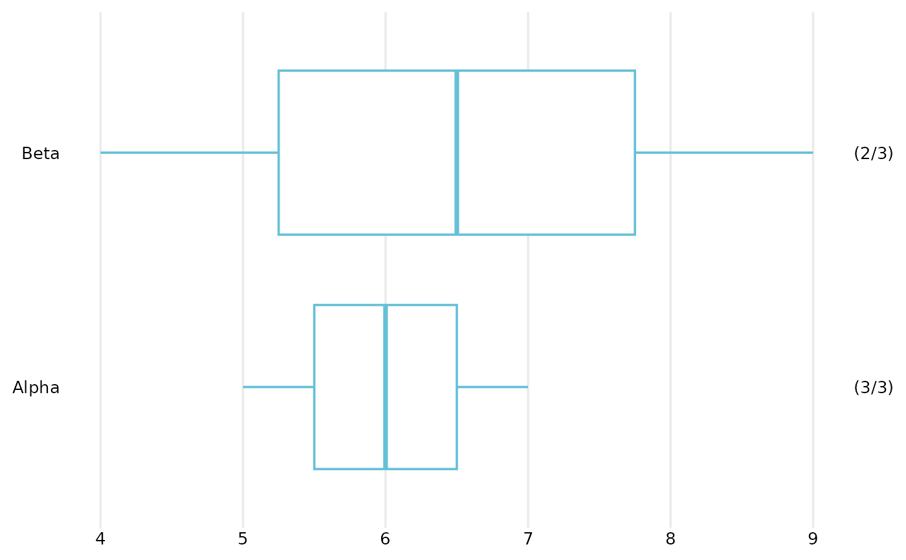
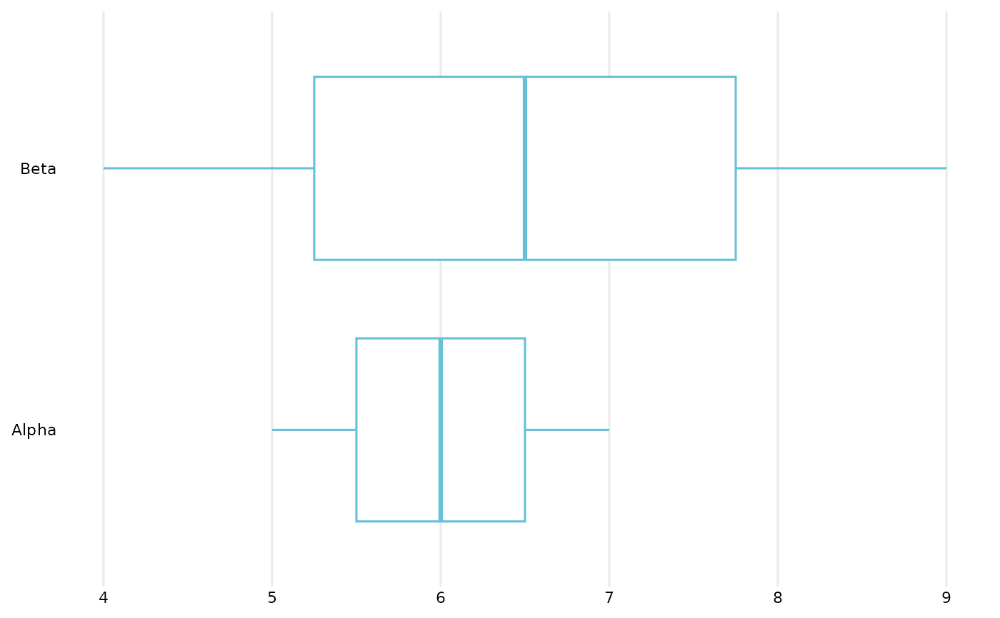
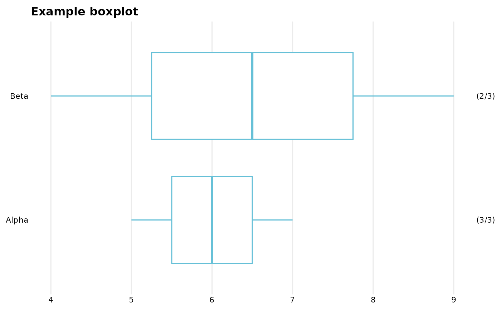

Boxplot (horizontal), in an OME style.
OME_boxplot_.RdOME_boxplot() builds a boxplot from survey-style data using bare column names.
OME_boxplot_() is the programmatic interface and underlying engine,
designed for use when column names are supplied as strings or symbols.
Usage
OME_boxplot_(
data,
value_var,
group_var = NULL,
show_counts = TRUE,
na.rm = FALSE,
valueLabText = NULL,
groupLabText = NULL,
omitGroupLabels = FALSE,
titleText = NULL,
colour = OMESurvey::get_OME_colours(1),
separate_at = NULL,
group_label_width = NULL,
group_labels = NULL
)
OME_boxplot(data, value_var, group_var = NULL, ...)Arguments
- data
A data frame.
- value_var
Numeric variable to plot.
- group_var
Optional grouping variable (factor).
- show_counts
Logical; whether to display (valid/total) counts on the right-hand axis. Defaults to TRUE.
- na.rm
Logical; whether to remove/ignore missing values. When
na.rm = TRUE, count labels show the number of plotted (i.e. non-missing) observations; whenna.rm = FALSE, labels show non‑missing and total number of observations.- valueLabText
Optional title for the value variable axis. If
NULL(default) the title is removed; if""the name ofvalue_varis used.- groupLabText
Optional title for the group variable axis. If
NULL(default) the title is removed; if""the name ofgroup_varis used.- omitGroupLabels
Optional logical controlling whether to omit group labels. Helpful when group_var=NULL. Default FALSE.
- titleText
Optional plot title.
- colour
Boxplot outline colour (any valid R colour). Defaults to get_OME_colours.
- separate_at
Optional integer specifying where to draw a horizontal separation line between groups defined by
group_var.If positive n the separation line is after the first n categories
If negative n the separation line is before the n-th last category. Default
NULLor 0 omits the line.
- group_label_width
Optional integer. Width (in characters) used when wrapping group labels with
stringr::str_wrap(). Default isNULL, to not wrap.- group_labels
Optional named character vector providing alternative labels for the grouping variable. Should be of the form
c(level1 = "Label 1", level2 = "Label 2"). Default isNULL, which uses the factor's existing levels.- ...
Additional arguments passed from
OME_boxplot()toOME_boxplot_(). Not used when callingOME_boxplot_()directly.
Details
Features include:
optional subdivision into separate boxes,
optional labels showing the number of non-NA responses per box,
optional dashed line to visually separate some of the boxes.
OME_boxplot() uses tidy evaluation;
OME_boxplot_() uses standard evaluation and is safe for loops and
programmatic workflows.
Note
Future/possible extensions include
support for dodging/colour
maybe vertical/horizontal switching
maybe faceting
Examples
dat <- tibble::tibble(
Score = c(5, 7, 6, 9, 4, NA),
Group = factor(c("Alpha", "Alpha", "Alpha", "Beta", "Beta", "Beta")),
Grouping2 = factor(c("G1", "G2", "G1", "G2", "G1", "G2"))
)
# Basic example
OME_boxplot(dat, Score, Group)

# Without counts
OME_boxplot(dat, Score, Group, show_counts = FALSE)

# With a title
OME_boxplot(
dat,
value_var = Score,
group_var = Group,
title = "Example boxplot"
)

# Example programmatic use
if (FALSE) { # \dontrun{
group_vars <- c("Group", "Grouping2")
for (v in group_vars) {
p <- OME_boxplot_(
data = dat,
value_var = "Score",
group_var = v
)
print(p)
}
} # }